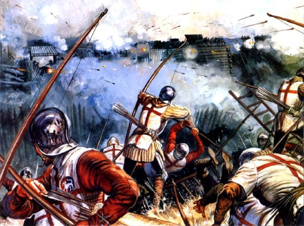
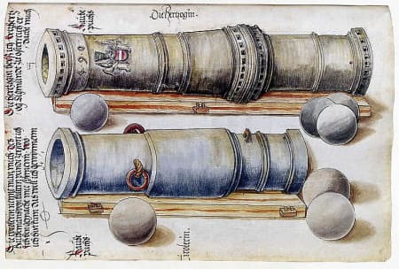
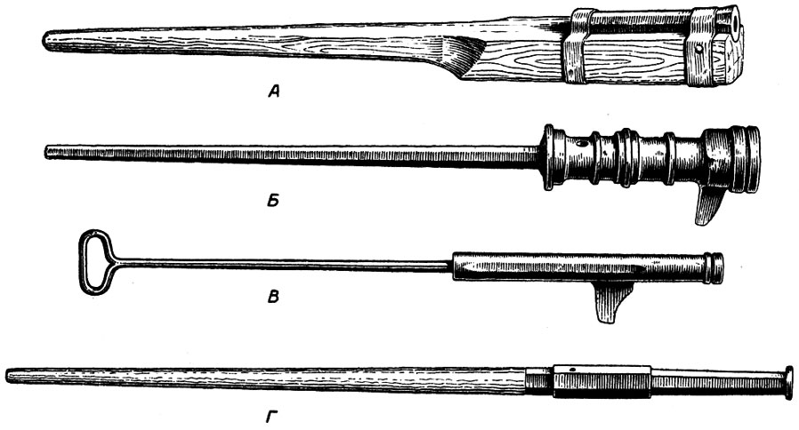
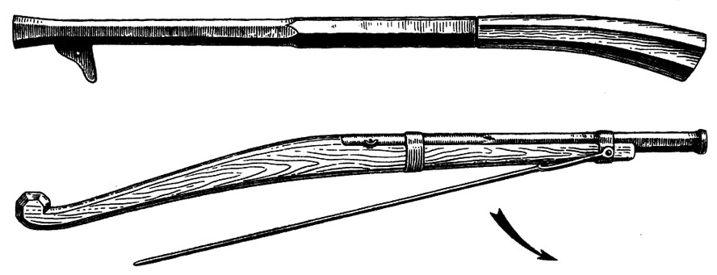
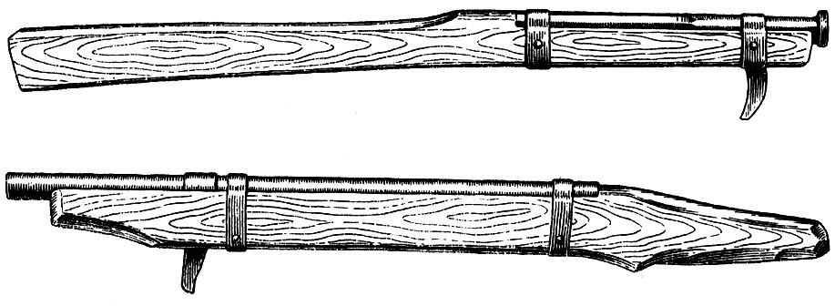
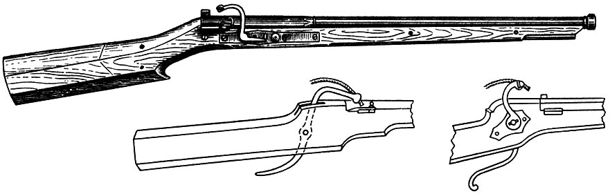
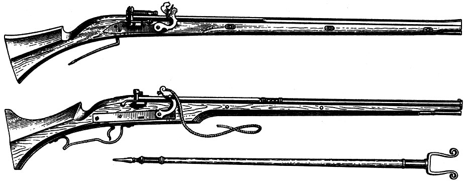
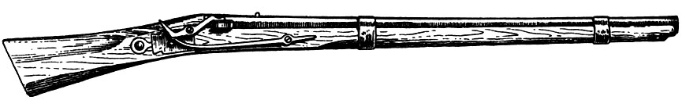

История
Лук - оружие богов и воинов
Его применяли воины Ассирии и Вавилона, Египта и Мидии, Греции и Рима, индейцы Северной и Южной Америки. В гомеровской поэме о Троянской войне и скитаниях Одиссея о луке говорится, как об оружии богов и воинов — оружии грозном и разрушительном.
Лук изготавливался из рога, вареных сухожилий крупных животных и из деревьев твердых пород. Дальность стрельбы, при которой эффективно поражалась цель, была около 200 метров. Натренированный лучник, как к примеру лучник английского войска в Столетней войне с Францией, выпускал в минуту до двух десятков стрел, которые помещались в колчане — специальном футляре из кожи, дерева или металла. Колчан украшался замысловатым шитьем и узорами, изображающими зачастую символику принадлежности к тому или иному клану и прикреплялся на сабельном или специальном поясе.

Ни одно из сражений древности не обходилось без применения лука, которым были вооружены как пехота, так и кавалерия. Так, к примеру, во время Пелопонненской войны 431-404 годов до нашей эры афинская армия в своих рядах насчитывала 1600 лучников. В средневековой Византии лучники, посаженные на коней, составили уже мобильный род войск, а добрая половина линейной пехоты получила в дополнение к мечу и копью это могучее по тем временам оружие. Лучники, действуя перед боевыми порядками своих войск, завязывали сражение, а иногда даже решали его исход. В эти времена особенно большую роль луку и стреле отводили турки-османы и другие народы Ближнего Востока и Средней Азии.
На Руси, как и в других странах, лук занимал прочное место в системе вооружения войск. Лучники, располагаясь, как правило, впереди, в интервалах и на флангах боевого порядка войск, наносили противнику значительный урон. Нарушая его построение, они содействовали бою тяжелой пехоты и конницы. Во время преследования отступающего противника всадники, вооруженные луками, настигали и истребляли его. Как боевое оружие лук применялся вплоть до конца XVII века.
Арбалет и самострел
В средние века в Европе появилась другая разновидность метательного оружия — арбалет. Весьма уступая луку в скорострельности, арбалет значительно превосходил его в эффективной дальности стрельбы, в точности попадания и в ударной силе стрелы. Короткие и тяжелые (до 500 г) арбалетные стрелы на значительном расстоянии убивали незащищенного воина, а на меньшей дистанции пробивали кольчугу и даже рыцарские латы.
На Руси арбалет назывался самострелом и получил признание на 100 лет раньше, чем в европейских странах. Первое упоминание о самострелах относится к X веку, а к XIII-XIV векам самострел прочно занял свое место среди других видов оружия в русском войске. Его использовали против шведских завоевателей в 1240 году, тевтонских рыцарей в 1240-1242 годах, а также во время нашествия татаро-монголов. В 1382 году, отражая натиск войск Золотой Орды под предводительством Тохтамыша, жители Москвы применили ряд образцов метательного оружия, в том числе самострел.
Арбалет, он же самострел, по сути, был механическим луком. На массивной деревянной ложе крепился лук, тетива которого натягивалась с помощью стремени или специального вороткового устройства, называемого ливером, а пуск производился простейшим механизмом, размещенным в прикладе. Мастерски владевший своим оружием, воин-арбалетчик представлял серьезную опасность для противника.
В ходе технического развития и усовершенствования видов вооружения арбалет постепенно вытеснялся с полей битв быстро развивающимся огнестрельным оружием.
Эра огнестрельного оружия
Официальной датой возникновения огнестрельного оружия, по крайней мере, среди европейских народов, считается XIV век, когда развитие техники позволило использовать порох.
В Германии, в городе Фрейбурге, стоит памятник человеку в монашеской рясе, которого звали Бертольд Шварц. Монах-францисканец Бертольд Шварц, обвиненный в занятиях черной магией и колдовстве, был посажен в тюрьму. Продолжая и здесь свои опыты, он смешал однажды серу, селитру и древесный уголь в пропорции 10:75:15. Получился состав страшной разрушительной силы: порох! Произошло это в 1330 году. Вскоре рецепт этот стал известен повсюду, и именно с начала XIV века порох получает распространение в Европе. Над полями битв, где раньше слышался только стук мечей, свист пролетающей стрелы да звуки труб, раздалось тяжелое уханье первых пушек.
Бомбарда
В числе первых образцов артиллерийского огнестрельного оружия были бомбарды — орудия, стрелявшие каменными ядрами большого диаметра. Об их размерах можно судить на примере «Кримгильда», изготовленного около 1388 года мастером Грунвальдом в германском городе Нюрнберге. Масса орудия составляла 3 тысячи килограмм, а масса каждого ядра — более 300 килограмм. Для перевозки «Кримгильда» требовалась упряжка из 12 лошадей.

В конце XIV века происходит дифференциация огнестрельного оружия. В самостоятельные группы выделяются артиллерийские орудия и ручное огнестрельное оружие.
На Руси огнестрельное оружие появилось тоже в XIV веке. Точная дата появления его не установлена. Согласно Голицынской летописи, «арматы» на Руси появились в 1389 году «и от того часу уразумели из них стрелять». Но в Новгородской летописи, а затем и в «Софийском временнике» упоминается не просто о появлении, а уже о боевом применении огнестрельного оружия — пушек и так называемых тюфяков при обороне Москвы от татар в 1382 году. Во всяком случае, изготовление пороха и достаточно высокий уровень железоделательного и кузнечного ремесла — необходимые предпосылки для возникновения огнестрельного оружия — существовали на Руси еще до XIV века.
Ручница
Один из первых образцов ручного огнестрельного оружия — ручница. Она появилась в конце XIV века и была распространена не только в странах Западной и Восточной Европы, но и на Руси. Первые образцы ручницы крайне несовершенны и представляли собой короткие железные, иногда бронзовые трубки, склепанные из отдельных полос или же выкованные из целого куска. Один конец трубки был закрыт наглухо и иногда заканчивался длинным металлическим стержнем или переходил сзади в древко, выполнявшим функции современного ложа. Трубки-стволы без этих стержней прикреплялись к ложам, представлявшим собой грубо обработанные деревянные колоды. Во время стрельбы пешие воины упирали его в землю, а кавалеристы в грудь, плечо или же брали под мышку. Заряжание и стрельба осуществлялись самым примитивным способом. В канал ствола засыпался заряд пороха, а затем туда вводился снаряд — железная или свинцовая сферическая пуля. Заряд пороха поджигали вручную, поднося к небольшому отверстию в стенке ствола (затравочному отверстию) тлеющий фитиль или раскаленный прут.
Первоначально ручница обслуживалась двумя стрелками. Первый стрелок наводил оружие на противника, а второй поджигал порох. Ручница имела внушительный размер — калибр до 25 мм и массу до 8 кг. Прицельная дальность стрельбы не превышала 150 метров. Это оружие применялось в русском войске до начала XVI века. Ручница принципиально не отличалась от артиллерийских орудий и, по существу, представляла собой те же пушки, но только уменьшенные настолько, что они допускали стрельбу с рук. Отсюда и название «ручница» (а позже «ружье»), принятое на Руси и у ряда славянских народов. На Западе эти ранние примитивные образцы ручного огнестрельного оружия назывались ручными пушками, ручными бомбардами или петропеллами.

Уже в первой четверти XV века в устройстве ручного огнестрельного оружия появились первые усовершенствования — стволы стали более длинными, приклады изогнутыми, затравочные отверстия расположенными не на линии прицеливания, то есть не сверху, а сбоку. Около затравочных отверстий приделывались полочки, на которые насыпалась затравка, на оружии появились прицельные приспособления. Такое оружие в Западной Европе называлось кулевринами.

На первых порах преобладало ручное огнестрельное оружие крепостного типа, то есть используемое для обороны крепостей и упиравшееся во время стрельбы в какуюнибудь прочную опору. Стремясь увеличить дальность эффективного выстрела, оружейники стали удлинять ствол. Оружие, и без того тяжелое, прибавило в весе, причем значительно возросла отдача. Чтобы устранить ее ощутимое действие, под концом ствола приделали массивный крюк (гак), который зацепляли за упор — стену или брус, и производили выстрел.
Гаковица
Так появились гаковицы — тяжелое ручное огнестрельное оружие, применявшееся в XIV — XVIII веках. Стреляли из них оловянными пулями диаметром от 14 до 25 мм. На Руси такое оружие называли затинными, то есть крепостными пищалями. Для боя в полевых условиях это оружие было непригодно. Эффективность стрельбы первых образцов ручного огнестрельного оружия была крайне низка, а обращение с ним — очень сложным и кропотливым. Процесс заряжания оружия по времени был чрезвычайно длительным и занимал обычно несколько минут. Больше всего неудобств доставляло обращение с порохом, представлявшим в то время мелкий пылеобразный порошок (зернистый порох появился лишь в 1525 году). Обращение с первыми образцами стрелкового оружия было еще и небезопасным, так как они были подвержены частым разрывам. Большое неудобство представлял собой способ воспламенения заряда с помощью тлеющего фитиля или раскаленного прута, подносимого к затравке рукой. Он отвлекал внимание стрелка от прицеливания, способствуя снижению и без того низкой меткости.

В течение длительного времени ручное огнестрельное оружие оставалось весьма несовершенным — его совершенствованию препятствовал общий низкий уровень средневековой техники.
Аркебуза
В XV столетии появились аркебузы (русское название пищаль), прямые предшественники стрелкового оружия наших дней. Они имели искривленные ложи для упора в плечо и допускали стрельбу с руки. Правда, меткость выстрела по-прежнему была низкой, а пробивная способность пуль часто оказывалась недостаточной для поражения закованного в железо всадника. Дальность полета аркебузных пуль не превышала 250 метров. Следует отметить, что аркебузой называлось не только огнестрельное оружие, но также и метательное оружие, представлявшее собой по существу арбалет, но снабженный подобием ствола с продольными вырезами для тетивы лука, благодаря чему он мог стрелять как стрелами, так и свинцовыми пулями.

На оружии появляются первые примитивные механизмы, облегчающие процесс производства выстрела. Таким механизмом был фитильный замок. Вначале он представлял собой железный прут, согнутый по форме латинской буквы S, и поэтому напоминал змею; он получил название серпентин от латинского серпеус — змея. В верхнем раздвоенном конце зажимался тлеющий фитиль, а на нижний конец стрелок нажимал во время спуска. Поворачиваясь на оси, верхний конец курка с тлеющим фитилем прижимался к затравочному отверстию и воспламенял порох. Затем замок претерпевал ряд изменений и усовершенствований. В конце XV столетия появляется пружинный фитильный замок, в котором курок с фитилем приближается к затравке с помощью предварительно сжатой пружины. Освобождение взведенного курка происходило при нажатии на кнопку. В отличие от первого варианта курка, пружинный фитильный замок почти мгновенно и с силой ударял по затравной полке, то есть прицеливание и выстрел были почти одновременными. В исходное положение курок возвращался рукой. И все-таки аркебузы имели много недостатков: процесс заряжания был чрезвычайно длителен и утомителен для аркебузира. Неуклюжее тяжелое оружие (до 15 кг) настолько изматывало солдата, что, по свидетельству современников, аркебузир, сделавший в час более десяти выстрелов, был уже не в состоянии попасть в цель.
Добиваясь увеличения стрельбы, оружейные мастера в том же XV столетии изобрели нарезной ствол. Историки приписывают это изобретение венскому оружейнику Гаспару Цольнеру, который в 1498 году сделал в канале ствола нарезы, расположенные параллельно его оси. Спустя некоторое время Август Коттер пошел дальше и заменил прямую нарезку на винтовую. Кучность и дальность стрельбы нарезных аркебуз была куда больше гладкоствольных. Хотя вследствие общего низкого уровня развития техники тех лет нарезное оружие для военных целей всеобщее признание получило позже, тем не менее, количественный рост его в армиях европейских государств неуклонно продолжался. Уже в 1455 году в швейцарском наемном войске на каждые 1000 человек пехоты приходилось 100 аркебузиров.
Впервые массовое применение аркебуз отмечено в Гуситских войнах 1419-1434 годов, когда Чехия боролась за свою национальную независимость. В этих войнах таборитское войско, объединившее в своих рядах крестьян и городские низы, под предводительством Яна Жижки отразило пять крестовых походов немецких рыцарей. Основной тактической единицей таборитов был воз с экипажем из 18-20 человек, двое из которых были стрелками, вооруженными аркебузами и ручницами. Таким образом, насыщенность таборитского войска стрелковым огнестрельным оружием была внушительной. Так, только в Домажлицкой битве у таборитов было 6000 стрелков, что составляло почти 10% общей численности их войска.
В конце XV — начале XVI столетия роль огнестрельного оружия возросла настолько, что это оружие стало в значительной мере влиять на ход и исход сражений. В качестве примера можно привести сражение при Аньяделло в 1509 году. Стремясь защитить свою независимость от посягательств французской короны, Венецианская республика создала 25-тысячное войско. Значительная его часть имела фитильные аркебузы. В мае 1509 года оно заняло позицию на пересеченной местности левого берега реки Адда, между городами Тревилио и Ривальто, и ожидало подхода противника. Более многочисленное войско Людовика XII, пытаясь маневром выманить венецианцев в открытое поле, начало обходить их левый фланг. На подступах к деревушке Аньяделло армии вошли в боевое соприкосновение, в котором французский авангард натолкнулся на шквал из свинцовых пуль. Венецианские стрелки были построены в несколько шеренг с разомкнутыми рядами. Выстрелив, аркебузир через интервал отходил для заряжания своего оружия, а его место занимал стрелок второй шеренги, за ним стрелок третьей и т.д. Таким образом поддерживалась относительная непрерывность огня. Поэтому неоднократные попытки французской пехоты и латников захватить позиции венецианцев закончились полным фиаско. Сотнями и тысячами они падали под градами пуль аркебуз. Воодушевленные разворачивающейся перед ними картиной, венецианцы допустили роковую тактическую ошибку — вышли на равнину, вследствие чего они потерпели поражение от превосходящих сил противника, получивших к тому же свежее подкрепление — несколько тысяч воинов.
Фитильный мушкет
В 1521 году на смену аркебузу пришел фитильный мушкет, родиной которого была Испания. Новое ружье имело больший калибр и длину по сравнению с аркебузом и, к тому же, превосходило его по баллистическим свойствам. Мушкет имел калибр до 23 мм, длину — 180 см, масса его колебалась от 8,2 кг до 10,24 кг, дальность стрельбы составляла 200-250 м. Стрельба велась круглыми пятидесятиграммовыми свинцовыми пулями, удар которых не выдерживали даже самые тяжелые и прочные латы. Поэтому это качество мушкета было решающим в борьбе с тяжелой конницей. Внушительный вес оружия и чувствительная отдача при выстреле заставляли использовать его со специальной вилкообразной сошкой высотой 120-135 см, называемой форкетом, и надевать на плечо мягкую кожаную подушку.

Не каждый солдат мог стать мушкетером, поэтому для этой цели подбирали наиболее сильных и крепких людей. Да и снаряжение мушкетера было достаточно тяжелым. На поясе висел кожаный мешок, в котором помещалось до трех десятков свинцовых пуль, отливаемых им собственноручно. Через левое плечо была перекинута широкая перевязьбандельера из дубленой кожи, где на шнурах располагались 12 мерок, 11 с заранее отмеренными зарядами пороха и одна с пороховой мякотью для передачи огня пороховому заряду на стволе. Здесь же висели фитили длиной до одного метра. Запас пороха, носимый мушкетером, размещался в большой деревянной пороховнице, обитой толстой кожей.
Заряжание мушкета шло медленно, и было настоящим мучением для стрелка. Даже в XVII веке во время Тридцатилетней войны австрийский мушкетер перед выстрелом должен был выслушать 163 команды и проделать 99 операций по заряжанию и подготовке мушкета к стрельбе. Только после всего этого раздавался выстрел. В момент заряжания мушкетер был беззащитен и для самообороны был вооружен еще шпагой. Нередко случалось, что его жизнь всецело зависела от того, как он владеет этим оружием. Будучи прекрасными фехтовальщиками, мушкетеры нередко владели холодным оружием лучше, чем огнестрельным. Для защиты мушкетеров выделялись пикинеры, вооруженные для отражения атак противника пиками. Для поддержания непрерывного ружейного огня для мушкетеров был изобретен специальный строй — «караколе» (улитка). Он представлял собой построение в десять шеренг. После залпа по противнику первая шеренга разделялась на две части и быстро уходила в тыл для заряжания мушкетов. На ее место выдвигалась вторая, третья и последующие шеренги. Кроме того, мушкетеры обучались совершать контрмарши не только назад, но даже вперед и к флангам.
Одной из первых, кто по достоинству оценил огромные возможности мушкетов, была шведская армия. В 1630-1631 годах в пехотном полку из 1440 человек личного состава 648 были вооружены мушкетами. В это же время в армии Густава-Адольфа появились полки, целиком состоявшие из мушкетеров. Великий военный реформатор, как его называют некоторые западные историки, Густав-Адольф разработал и применил новую линейную тактику, не раз приносившую успех шведам в битвах Тридцатилетней войны. Линейная тактика допускала массированное применение мушкетов. Оружие, расположенное в 2-3 линии и в 3-6 шеренги в глубину, одновременно могло дать залп сразу из нескольких тысяч стволов. Победы шведов при Брейтенфельде (1631 г.) и Люцене (1632 г.) убедительно доказали жизненность новой тактики, где более полно использовалась возросшая мощь мушкета.
Пищаль
Разновидностью западноевропейского мушкета была русская пищаль с фитильным, а затем и с кремневым замком.

Впервые о пищали упоминается в XVI веке. Пехотинцев, вооруженных этим оружием, до середины столетия называли пищальниками. Так, из летописей известно, что в 1510 году из Москвы в Псков было направлено 1000 пищальников. В 1543 году только Новгород выставил 1000 пеших и 1000 конных пищальников.
Постоянного войска тогда еще не было, и пищальники, будучи ополченцами, снаряжались жителями городов, их выставлявших. Например, новгородцы экипировали одного стрелка в среднем с 3-5 дворов. Они одевали его в сермягу, приобретали пищаль, порох, свинец и обеспечивали на определенный срок продовольствием. В середине XVI века пищальники начали уступать место стрельцам.
Первый отряд «выборных стрельцов из пищали» численностью 3000 человек был создан в 1550 году при царствовании Ивана Грозного и состоял из шести «статей» численностью 500 стрельцов в каждой. «Статьи» в свою очередь делились на сотни. Стрелецкие подразделения имели одинаковое обмундирование и вооружение и по сути своей были первым зародышем русского постоянного войска. В стрельцы набирались только вольные люди, не облагавшиеся налогами, получавшие за службу жалование и земельные участки в окрестностях городов. Служили они пожизненно и наследственно. Лучшие из них зачислялись в особый конный отряд и назывались «стремянными».
Вооружение стрельцов состояло из пищали, сабли и бердыша, который исполнял роль подставки во время стрельбы, но, кроме того, мог использоваться для отражения атак вражеской конницы. Бердыш — это широколезвийный топор на длинном древке, представлял серьезную опасность для всадника. Поэтому русские стрельцы в своем развитии шагнули несколько дальше западноевропейских мушкетеров. Вооруженные бердышами, они могли с успехом постоять за себя в самом жестоком рукопашном бою. Командирами стрельцов царь назначал «детей боярских». К концу XVI столетия в русском войске насчитывалось более 12 тысяч стрельцов, а к 1681 году число их достигло 55 тысяч.
Большое внимание царь уделял строевой и боевой подготовке, поэтому проводил ежегодные стрелецкие смотры. Так из воспоминаний английского путешественника XVI века Дженкинсона следует, что в декабре 1557 года на смотр прибыло около 500 стрельцов, которые были построены в 50-60 метрах от ледяного вала длиною 200 м, толщиной до 4 м и высотой до 2 м. По команде стрельцы начали обстреливать ледяной вал. Вскоре гигантская ледяная глыба объемом около 1600 м3 была разрушена до основания.
Первое упоминание о роли стрельцов в бою относится к Казанскому походу 1552 года, в котором 22 августа своим огнем они помогли русской разведке отразить вылазку 15- тысячного конно-пешего отряда татар и обеспечили войску Ивана IV (Грозного) выход к стенам города. Кинжальным огнем из пищалей, «аки с небеси», стрельцы прикрывали осадные работы. Совместно с артиллерийским огнем, который велся с 13-метровых деревянных башен, находящихся между Царевыми и Арскими воротами, они значительно затрудняли маневры противника внутри города. 30 сентября стрельцы совместно с казаками ворвались и захватили Арскую башню, а 2 октября, взорвав в нескольких местах крепостную стену, штурмовали сам город, прокладывая себе путь при помощи пищалей и бердышей.
Выдающимся образцом умелого использования ружейного огня было сражение 21 января 1605 года под Добрыничами, когда царское войско Василия Шуйского, насчитывающее до 18 тысяч стрелкового оружия, разгромило армию Лжедмитрия I. Огонь пищалей был точным, массированным и губительным. Под их огнем практически полностью была уничтожена конница Лжедмитрия I. Только убитыми было около 6 тысяч человек, и захвачено 13 орудий. Поэтому оснащению войск ручным огнестрельным оружием всегда уделялось большое внимание. Так, в приказе псковскому воеводе от 1643 года говорилось: «… а которые дворяне и дети боярские ездят с одним пистоли, а к пистолям карабинов и мерных пищалей не держат и те бы к пистолям держали карабины и пищали мерные». Стрельцы, по сведениям современников, были высококвалифицированными стрелками. Так, по сообщению летописцев, «стрельцы таци бяху искусни и научени ратному делу и пищальному стрелянию, яко и малые птицы на полете убиваху из ручных пищалей…».
Идея применения пороха как метательного средства не останавливалась. Предпринимались все новые и новые попытки усовершенствовать огнестрельное оружие. И хотя огнестрельное оружие средних веков было далеко от совершенства, оно сыграло существенную роль и произвело переворот в военном деле, изменив тактику боя, сведя на нет мощь рыцарской бронированной кавалерии.
Уже к концу XV и середине XVI веков оказались исчерпанными все возможности совершенствования ручного огнестрельного оружия на базе таких ограниченных предпосылок, каким являлись лишь ствол и тлеющий фитиль. Никаких перспектив эти предпосылки уже не открывали. Требовалось появление какого-то новшества, которое могло бы дать толчок к дальнейшему развитию оружия.